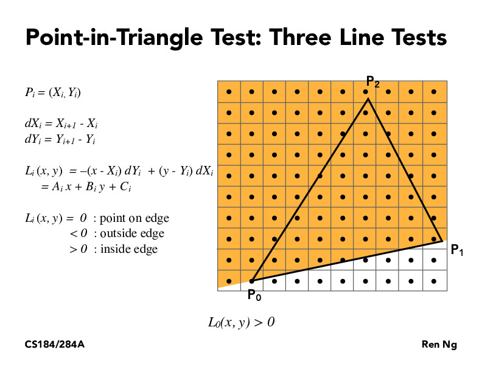
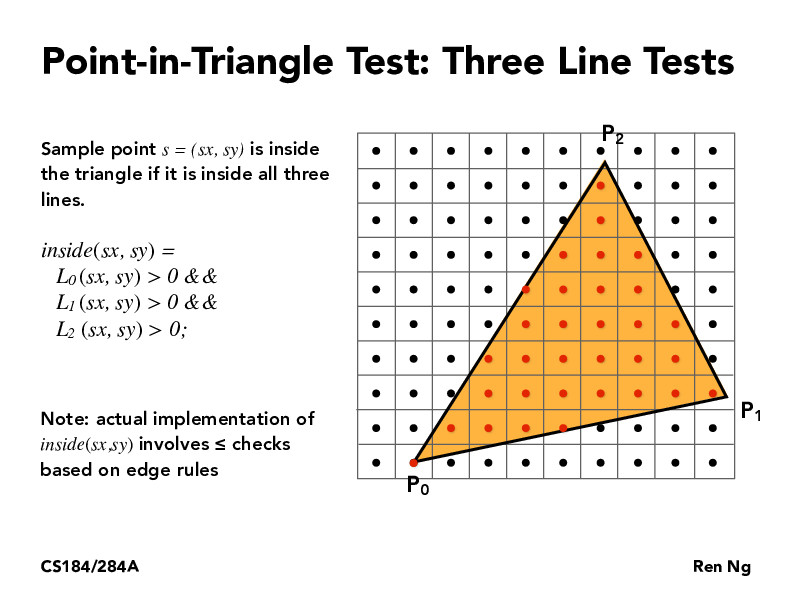
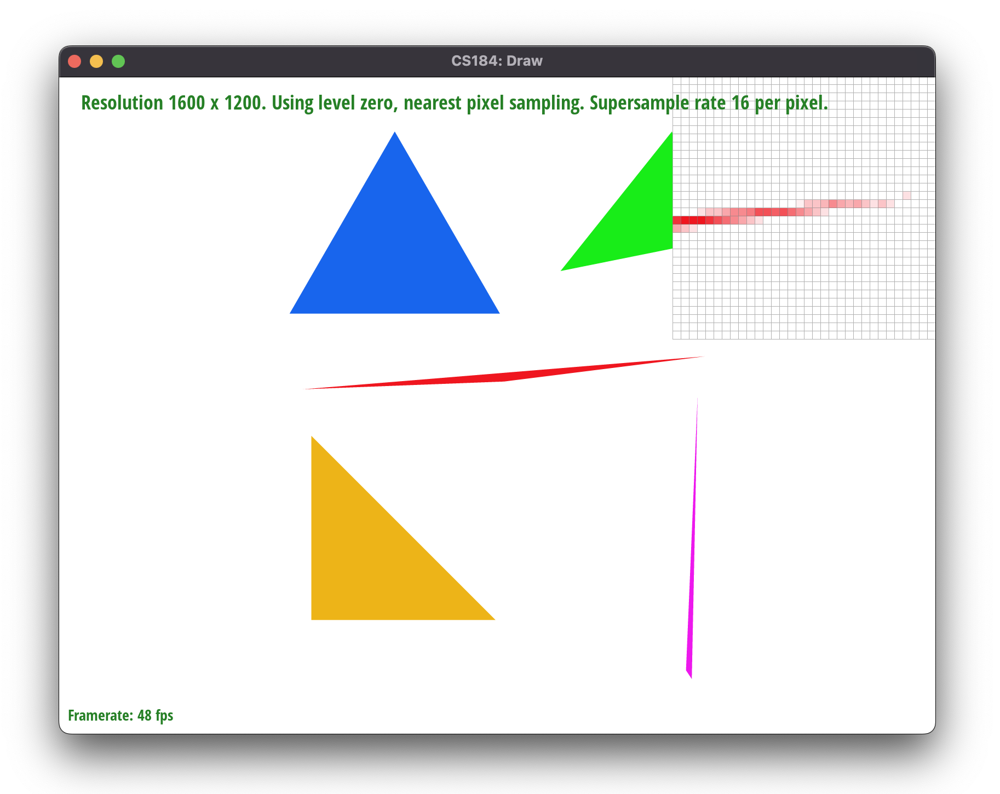
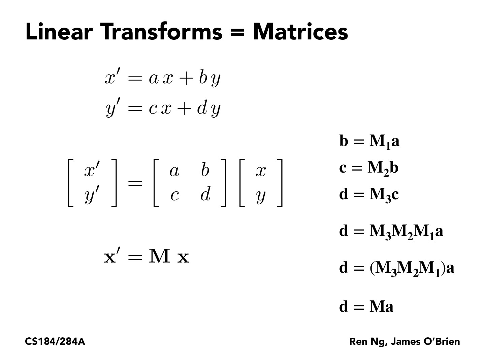
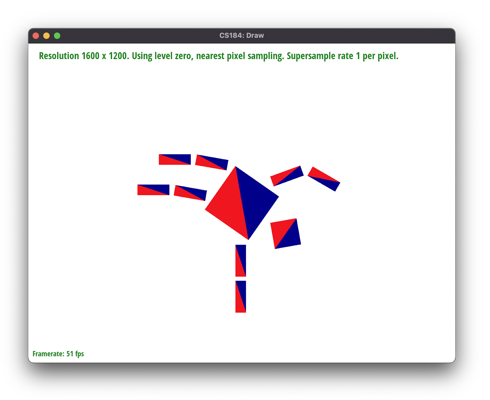
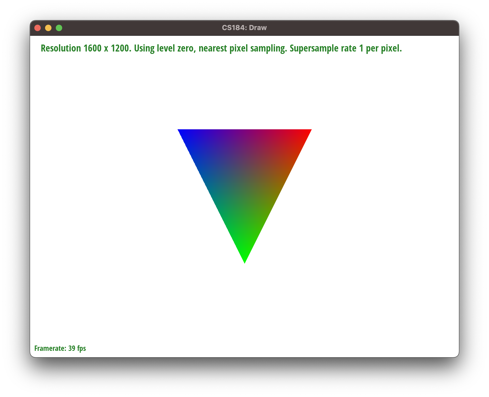
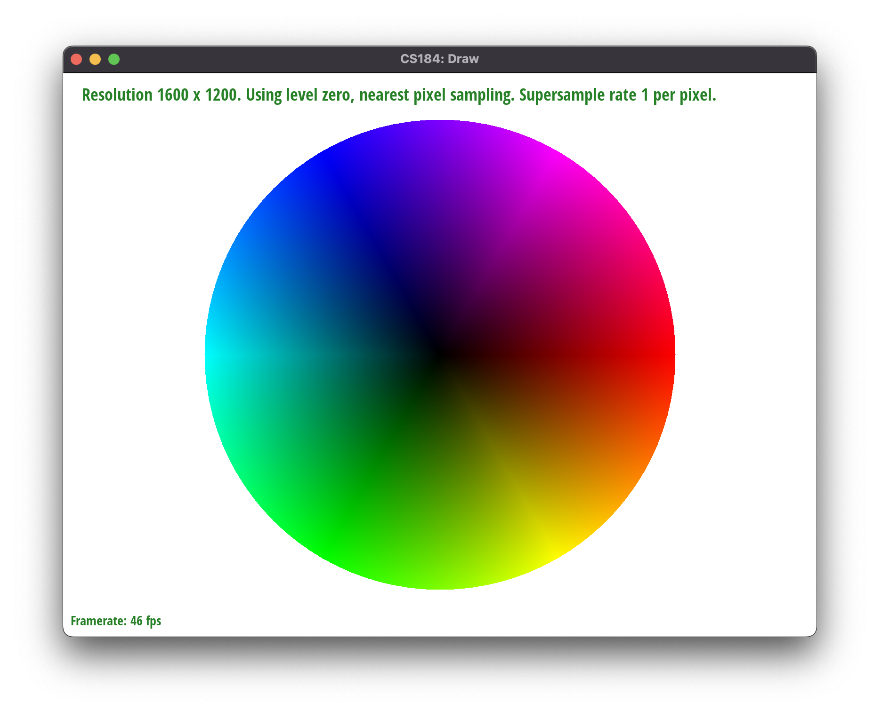
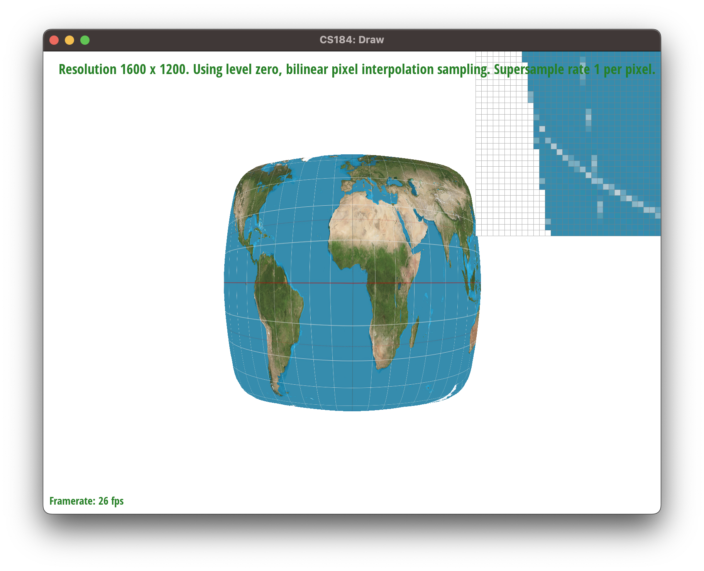
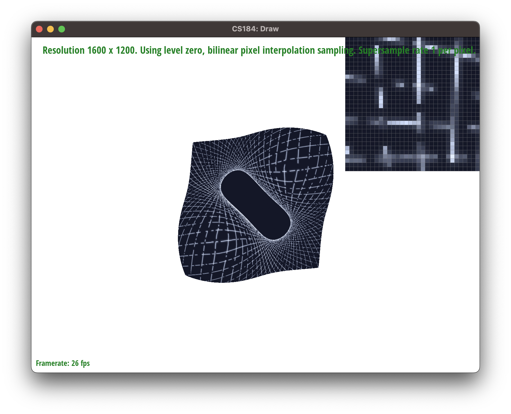
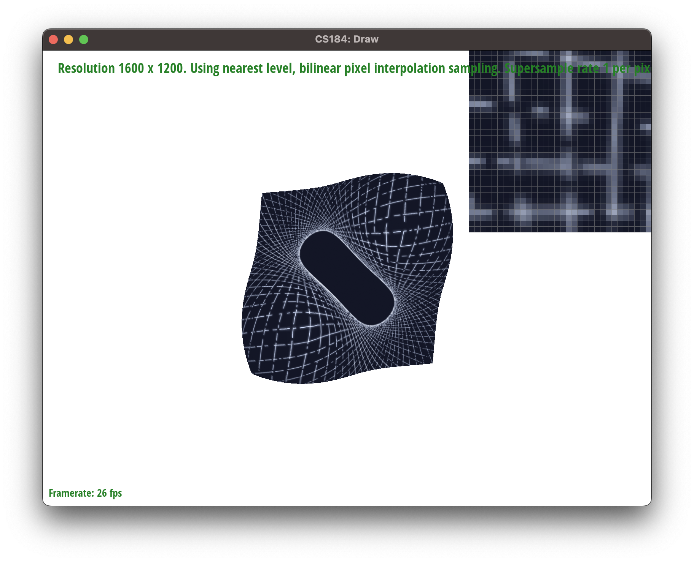

Project 1: Rasterizer
Abdul Ali Khan, Zachary Zollman
Overview
This project gave us the opportunity to gain an understanding of how to implement various computer graphics concepts such as rasterization, supersampling, texture mapping, and level sampling. Through this project, we implemented powerful algorithms for rasterizing rasterize triangles. To increase efficiency, we used bounding box checks, which involved initially checking the triangle against the bounding box to determine the region of coverage, then checking the individual samples within this bounding box to determine if the samples need to be filled or not.In addition, we implemented supersampling to give our program the power to antialias the scene by utilizing multiple samples per pixel. By doing this, our program was able to produce a smoother image that possessed much less aliasing and jaggies. In order to implement supersampling, we had to modify the rasterization pipeline to take more samples and to combine multiple samples to determine the color for each pixel.
We also wrote logic for transforming triangles in space, which involved transformation matrices. We then used barycentric coordinates to implement color interpolation. We were able to assign color values to pixels based on the relative distance from each of the triangle's vertices.
We also implemented texture mapping with pixel sampling and level sampling. Given a texture map, we were able to map color values onto pixels. This involved calculating the barycentric coordinates of a sample point on the rendered triangle, and then finding the corresponding point on the texture map by scaling the x-coordinate by the width of the texture map and the y-coordinate by the height of the texture map. We implemented two different pixel sampling techniques: nearest and bilinear. Nearest will take the closest texel to the sample point and use that as the color, while bilinear will interpolate between four texels to determine the sample's color value. Level sampling was also used so that our program could take advantage of mipmapping, a cost-effective antialiasing technique.
Overall, this project was a great learning experience. We were able to gain hands-on experience with computer graphics concepts such as rasterization, transformation, lighting, bounding box checks, and texture mapping. We got to implement antialiasing techniques (supersampling, pixel sampling, and level sampling), see them in action, and learn about different tradeoffs between them.
Task 1: Drawing Single-Color Triangles
To rasterize a triangle, we first find the bounding box of the triangle, which is essentially a rectangle that containes the triangle. To determine the boundaries of the rectangle, we calculate the minimum and maximum x- and y-coordinates of the trianle's vertices. We then test each pixel that is within the ranges of x- and y-values. In other words, we iterate through each pixel in the bounding box. At each pixel, we perform a three-line test to check if the pixel is inside the triangle. If the pixel is inside the triangle, we fill the pixel with the specified color. 
The Point-in-Triangle test is a simple method in computer graphics that is used to determine whether a given point lies within a given triangle. This test works by considering each line of the triangle and determining whether the point is above or below that line. If the point is above or on all three lines, then it is inside the triangle; if it is below any of the lines, then it is outside the triangle. The test calculates the signed areas of three sub-triangles formed by the pixel and two vertices of the triangle. If the signed areas have the same sign, then the pixel is inside the triangle.
We also add a half-pixel offset to the coordinates when filling the pixel to ensure that the pixel is correctly centered within the bounding box.
This is the basic approach to triangle rasterization without supersampling.
// Task 1: Implement basic triangle rasterization here, no supersampling
// find the bounding box of the triangle
int minX = min(x0, min(x1, x2));
int maxX = max(x0, max(x1, x2));
int minY = min(y0, min(y1, y2));
int maxY = max(y0, max(y1, y2));
// iterate through the bounding box
for (int x = minX; x <= maxX; x++)
{
for (int y = minY; y <= maxY; y++)
{
//three line test to see if the point is inside the triangle
float d1 = (x - x1) * (y0 - y1) - (x0 - x1) * (y - y1);
float d2 = (x - x2) * (y1 - y2) - (x1 - x2) * (y - y2);
float d3 = (x - x0) * (y2 - y0) - (x2 - x0) * (y - y0);
// if the point is inside the triangle, fill the pixel
if ((d1 >= 0 && d2 >= 0 && d3 >= 0) || (d1 <= 0 && d2 <= 0 && d3 <= 0))
{
fill_pixel(x + 0.5, y + 0.5, color);
}
}
}
The given algorithm uses a bounding box to define the potential area of the triangle and iterates through each pixel within the bounding box to determine whether it is inside or outside of the triangle. As such, it covers every pixel within the bounding box, and therefore, it can't miss any pixels inside the triangle.
Therefore, the given algorithm is no worse than one that checks each sample within the bounding box of the triangle, and it provides a reasonable trade-off between computational efficiency and accuracy.
Task 2: Antialiasing by Supersampling
Supersampling involves sampling a model multiple times per pixel, rather than just once per pixel. This is useful because it can reduce undesired behaviors that arise from sampling only once per sample, such as jaggies. By sampling multiple times, we can select a more representative pixel color. In particular, on edges, we can average the triangle color with the background/surrounding color. Thus, there isn’t as much of a sudden cutoff, but rather a gradual transition between the triangle’s color and its surroundings.In order to antialias our triangles, we increased the size of our sample buffer so that we could store the desired number of colors per pixel. In order to achieve this, we modified the
sample_buffer.resize() calls in set_sample_rate and set_framebuffer_target to set the size to width * height * sample_rate. We also modified the rasterize_triangle function to be able to sample multiple points within the given pixel. The samples are evenly spaced in a sort of mini-grid within the grid of pixels. As we move through the grids using for loops, we set the color in the sample buffer to be the triangle color if it is within the triangle. We modified resolve_to_framebuffer so that it could take in multiple sample colors from the sample buffer to determine a single pixel color. Specifically, we averaged the color values. This involved summing the RGB values for each color and dividing by the number of colors. We implemented supersampling for triangles, but we still wanted lines and points to render appropriately, so we modified fill_pixel to fill all corresponding samples in the sample buffer with the desired color. That way, when the corresponding samples were averaged to determine the color for the pixel, they averaged to the desired color.

Task 3: Transforms
Linear transformations in computer graphics are changes made to an image or object in order to modify its size or position. These transformations can be mathematically represented by matrices; for example, a scaling transformation can be represented by a matrix that multiplies the coordinates of each point on the object by a certain factor, and a translation transformation can be represented by a matrix that adds a certain value to the coordinates of each point. The advantage of using matrices to represent linear transformations is that they can be combined and applied to an object in a single operation, allowing complex transformations to be performed quickly and efficiently.
Rotation matrices use sine and cosine functions to rotate an object around a certain axis. A rotation matrix is defined as R = [[cos(θ), -sin(θ)], [sin(θ), cos(θ)]]. When multiplied by the coordinates of a point of an object, this matrix rotates the point by an angle θ around the origin. The sine and cosine of the angle θ are used to calculate the coefficients of the matrix, while the elements of the matrix indicate how the coordinates of the point should be scaled and offset in order to rotate the point by the desired angle.

In the code, the
translate function returns a matrix that adds dx and dy, which represent the x and y-offset, to all elements of the matrix. The scale function returns a matrix that can be used to multiply x-components by sx and y-components by sy, which represent the scale factors in the x and y directions, respectively. Finally, the rotate function returns a matrix that rotates an object by a certain degree using the sine and cosine functions. All of these matrices can then be multiplied together to create a composite transformation matrix which can be used to scale, rotate, and translate an object.
Using slides from class as a guide, we wrote the logic for the functions below:
Matrix3x3 translate(float dx, float dy)
{
// Part 3: Fill this in.
return Matrix3x3(1, 0, dx,
0, 1, dy,
0, 0, 1);
}
Matrix3x3 scale(float sx, float sy)
{
// Part 3: Fill this in.
return Matrix3x3(sx, 0, 0,
0, sy, 0,
0, 0, 1);
}
// The input argument is in degrees counterclockwise
Matrix3x3 rotate(float deg)
{
// Part 3: Fill this in.
float rad = deg * PI / 180;
return Matrix3x3(cos(rad), -sin(rad), 0,
sin(rad), cos(rad), 0,
0, 0, 1);
}

The cubeman is mid-somersault, trying to get into a handstand to then swing his legs around underneath himself. I have changed the body color by adding blue tiles to give him more motion.
Task 4: Barycentric coordinates
Barycentric coordinates are a way to represent a point inside a triangle as a linear combination of the triangle's vertices. To understand how we compute these coordinates, you can imagine that we create lines between the point inside the triangle and the triangle's three vertices. This creates three smaller triangles within the triangle. Each vertex is associated with the smaller triangle that is across from it in the bigger triangle. Thus, the closer a vertex is to a point, the larger its corresponding triangle will be. We then compute the ratio of the area of each smaller triangle to the area of the entire triangle. In this system, a vertex that is closer to the point inside the triangle will get a larger ratio. These values represent the weights assigned to each vertex. If we do a weighted sum of the vertices (using these weights that we calculated), we will get the position of the point. This can be useful for color interpolation, because if we assign a color to each vertex, we can use barycentric coordinates to calculate a weighted sum of each color for each pixel inside the triangle. Thus, points closer to a vertex will have a color closer to the color associated with the vertex. This phenomenon is visible in the above image.
Since barycentric coordinates are simply a set of numbers that describe a linear combination of vertices of a given triangle, we can also describe them symbolically.
Given triangle △ABC, if P=(α,β,γ), where α+β+γ=1, and A, B, C each has an associated value, then P=αA+βB+γC
We know that the coordinates of point P can be expressed as a linear combination of the coordinates of points A, B, and C. That is,
P = αA + βB + γC
where α, β, and γ are constants that represent the weights of each point in the linear combination.
Since α+β+γ=1, we can rewrite the equation as:
P = (α/1)A + (β/1)B + (γ/1)C
This can be interpreted as a weighted average of the values of A, B, and C, where the weights are α, β, and γ respectively. Thus, P is the center of gravity of the triangle.
Therefore, we have proved that if P=(α,β,γ), where α+β+γ=1, and A, B, C each has an associated value, then P=αA+βB+γC.
float d1 = (ix - x1) * (y0 - y1) - (x0 - x1) * (jy - y1);
float d2 = (ix - x2) * (y1 - y2) - (x1 - x2) * (jy - y2);
float d3 = (ix - x0) * (y2 - y0) - (x2 - x0) * (jy - y0);
if ((d1 >= 0 && d2 >= 0 && d3 >= 0) || (d1 <= 0 && d2 <= 0 && d3 <= 0))
{
sample_buffer[(j * width + i) * sample_rate + m * ::floor(sqrt(rate)) + n] = color;
}

We encountered an issue where there was a white pixel at the center of the color wheel but it was resolved by adjusting the allowable gamma value to fill any carry over caused by floating point errors. This adjustment improved the accuracy of the color wheel and ensured the colors were displayed correctly.
Task 5: "Pixel sampling" for texture mappings
Pixel sampling involves sampling colors on a texture to determine which color gets mapped from the texture onto a shape that actually gets rendered. Our code iterates through locations on a rendered triangle and calculates their barycentric coordinates, and then passes those coordinates to a sampling function in texture.cpp using a struct calledSampleParams. There are two different pixel sampling functions: nearest and bilinear. The first finds the nearest location on the texture map and returns its color, while bilinear performs a bilinear interpolation based on the four nearest values of the texture map. We can think of the texture map as a square grid with color values on the vertices; nearest sampling finds the nearest vertex, while bilinear finds the surrounding vertices (upper left, lower left, upper right, and lower right) and averages them based on how close they are to the coordinate we are sampling. Each function accesses colors on the texture map by calling MipLevel::get_texel

There is a clear difference between nearest pixel and bilinear sampling with 1 sample per pixel, which is that fine details of the image have more sudden and extreme variation in the nearest pixel version. For example, in the pixel inspector, we can see that the latitude and longitude lines on the globe are more jagged and discontinuous on the nearest pixel version. Looking at the nearest pixel image as a whole, we can see that some of the longitude lines disappear around the equator, and that the lines that are present have a more jagged appearance.

Both of these 16-sample-per-pixel images are smoother than their 1-sample-per-pixel counterparts. Unlike the smoothing in the bilinear image with 1 sample per pixel, this smoothness includes smoothness of the edges. In other words, for both of these images with more supersampling, the transition between the rendered world map image and the background is more gradual and less jagged. Between the two images, we can see that the nearest pixel sampling has again produced some discontinuities in the latitude and longitude lines, but they are less noticeable at 16 samples per pixel because they are smoothed out. The bilinear sampling does not have that issue to such a great extent. Out of all of the options, bilinear sampling at 16 samples per pixel is the smoothest, and nearest sampling at 1 sample per pixel is the most jagged.
Overall, it seems that bilinear sampling leads to smoother transitions between colors within rendered shapes than nearest sampling. Increasing the number of samples per pixel also leads to smoother transitions between colors within rendered shapes, and also between the shapes and the background. The difference between nearest and bilinear sampling is noticeable in the jaggedness or smoothness at boundaries between colors, so it is likely to be most noticeable when there are fine details in the image with high contrast in color. In the images discussed above, the latitude and longitude lines, which were relatively thin, were finer details on the world map. The white lines stood out prominently against the blue waters of the world map. This makes sense because nearest sampling only results in colors that are in the texture map, whereas bilinear sampling can interpolate based on colors that are in the map. On a boundary between multiple colors, nearest sampling will choose the nearest color value on the map, whereas bilinear will interpolate the multiple colors and produce a blend, resulting in smoother transitions.
One aspect of this task that was challenging was dealing with edge conditions. The texel coordinates, I realized, had to be less than the dimensions of the mip (ie, the x-coordinates had to be less than the width of the mip and the y-coordinates had to be less than the height of the mip). On edges of the mip, bilinear sampling might only interpolate between two distinct texels, or it could end up with only one.
Task 6: "Level sampling" with mipmaps for texture mapping
Level sampling involves pre-computing different levels of resolution of an image and then sampling from appropriate levels, rather than always sampling from the highest-quality image. To implement it, we fill ourSampleParams struct with information relevant to sampling, including the level sampling method and the pixel sampling method. We also take the coordinates of the sample point, the point one unit above the sample point, and the point one unit to the right of the sample point, convert them to barycentric coordinates, and store them in the struct. We then pass this struct to our sampling function, Texture::sample. The behavior of this function depends on the level sampling method. For zeroth level sampling, we sample at the zeroth level. For nearest level sampling, we calculate the nearest level to the level that we calculated to be appropriate and sample at that level. For linear level sampling, we sample at the two nearest levels and interpolate between them based on how close they are to the level that we calculated to be appropriate. To calculate which level is appropriate, we use another function called Texture::get_level. In this function, we calculate the difference vectors between the sample’s barycentric coordinate and the sample’s barycentric coordinate with the 1-unit x-offset and y-offset. We then scale the difference in the x-values by the width of the texture and the y-values by the height of the texture. We then select the larger norm of these two vectors, and pass this value into the logarithm function with base 2. If the value is not within the range of possible values for levels, we clamp it to be within this range.
Switching from nearest pixel sampling to linear pixel sampling decreases speed and increases antialiasing power. Storing pre-computed lower-resolution levels in a mipmap increases memory usage, but using them can increase antialiasing power and they can be faster than supersampling. Relative to nearest level sampling, bilinear sampling is slower but increases antialiasing power. Supersampling increases antialiasing power substantially, but decreases speed and generally increases memory usage since more values are stored per rendered pixel.
 
We can see in these images that the most jagged option of the ones specified is
L_ZERO and P_NEAREST, and the smoothest option is L_NEAREST and P_LINEAR. The difference between L_ZERO and L_NEAREST appears to be more dramatic than the difference between P_NEAREST and P_LINEAR for this rendered image.
As with the previous task, edge behavior was important to consider for avoiding errors. In
Texture::get_level, we limited the range of possible return values such that it could only fall within the range of indexes of levels that truly exist. Also, for linear interpolation of levels, I initially failed to account for an edge case. Our program calculates the floor and the ceiling of the value returned by Texture::get_level to determine which two levels should be sampled, and I didn't anticipate that the two calculated values could be the same when the value returned by Texture::get_level is an integer. We weighted the color values based on the distance between the levels and the value returned by Texture::get_level; when this value was an integer, we would give each value a weight of 0, so the colors values would change to all zeros, which is rendered as black. To resolve this, I altered the function to only interpolate between two levels when there were two distinct levels. When there was only one, I would simply return the color value from the one level.